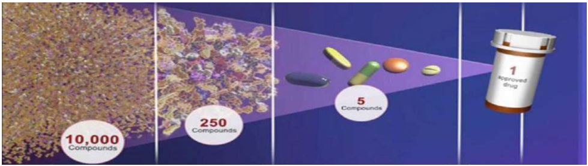
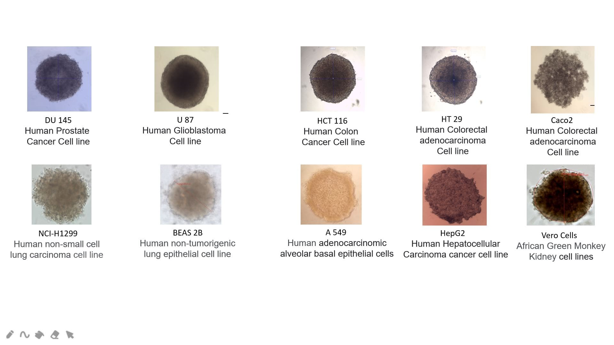
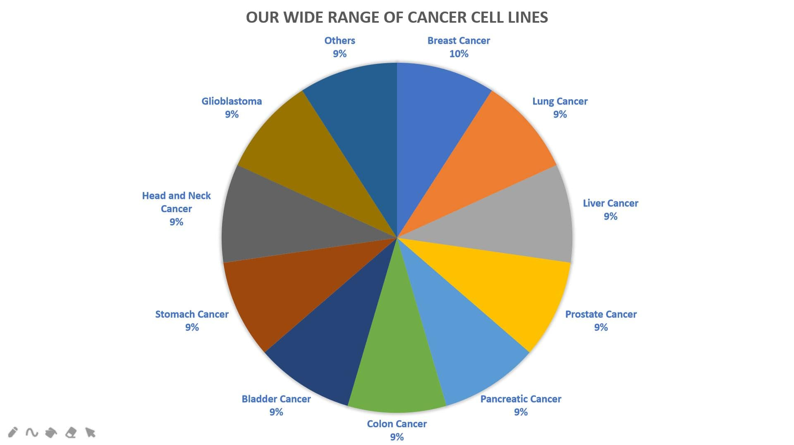
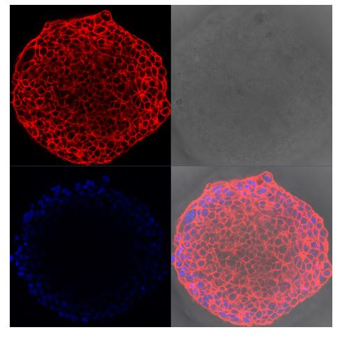
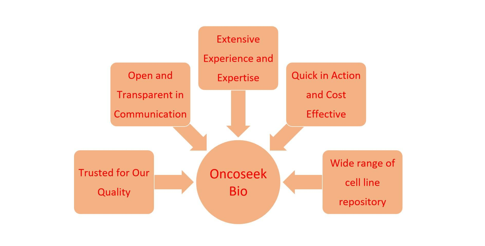

We have established and functionally characterized a large panel of in-vitro bioassays as well as the development of customer-tailored cell-based assays.
We provide 3D Spheroid and 2D Monolayer based in vitro assay services using stem cells, primary cells, standard cell lines and patient derived cells.
We can perform Mono-spheroid assays as well as Co-culture spheroid assays.
We offer Comparative data of 2D vs. 3D cell culture drug responses and can identify most potential molecules that display enhanced activity for your drug discovery programs.
Choose from our portfolio of standardized and characterized assays or discuss your individual needs with our in-house experts.

Our Speciality
Fibrosis Spheroid Model
NASH/NAFLD Spheroid Model
Spheroid Models for Various Cancers
Spheroid Models for oncolytic viruses
Spheroid Models for infectious diseases
Why Choose Oncoseek Bio for your Research Needs?
- First in India - We are first of its kind start-up company in India to offer 3D Spheroid based Drug Discovery Services to the industry.
- Open and Transparent in Communication - We keep our clients updated on the progress as communication with our clients throughout the study process is our top priority.
- Trusted for Our Quality – We use high standard methods, materials, processes and work towards our customer satisfaction and provide scientifically and technically reliable and reproducible data.
- Extensive Experience and Expertise – We have a team of Scientists who are Post docs, PhDs, MTechs MPharms and MScs who have extensive experience and expertise in the field.
- Quick in Action and Cost Effective - Our services are fast and relatively cheaper.
- Our Wide range of cell line repository – We maintain wide range of cell lines for your assays like Breast cancer, colon cancer, Liver cancer, Lung Cancer, Pancreatic cancer, Prostate Cancer, Bladder cancer, Stomach Cancer, Head and Neck Cancer, Glioblastoma and many non-tumour cell lines like fibroblasts, HUVEC cells, Endothelial and Epithelial cells.
How do we work:
Our clients consult us one-on-one.
We prepare a proposal that clearly defines project scope, timeline and cost.
We execute the experiments, generate data and analyse it.
We prepare the final report and deliver ready to publish results.

Spheroid models of various different tumor cell lines imaged at 10X magnification under brightfield illumination prior to test agent addition, as part of routine QC processes

Our Drug Discovery Services Portfolio:
Toxicity Testing
Toxicity is one of the significant reasons for failure in therapeutic drug development and a key aspect while choosing drug candidates for progression through the drug development pipeline. Performing suitable preclinical assays which can appropriately predict the potential toxicities much earlier in the drug development process is beneficial to select the most successful lead molecule. In vitro testing on Standard Cell lines / primary cells / Stem cells / Patient derived cells will give the researchers a chance to preview in vivo responses, thus aiding design of better dosing strategies and optimization of animal models in preclinical testing, as well as Phase I clinical trials. We have extensive expertise in performing in vitro assays on Standard Cell lines / primary cells / Stem cells / Patient derived cells to measure the potential toxic effects of therapeutic candidates, including small molecule compounds, natural products/ extracts, Nanoparticles, Antibody/ Nanobody Drug Conjugates and other biologics. We use both 2D monolayer cultures and 3D Spheroids and Organoids to assess the effects of therapeutic candidates on cellular viability.
 Comparison of effect of Doxorubicin response on 2D monolayers and 3D spheroids. IC50 values show the difference in the drug response
Comparison of effect of Doxorubicin response on 2D monolayers and 3D spheroids. IC50 values show the difference in the drug response
Cell Viability Assays and Imaging
We offer in vitro 2D monolayer and 3D Spheroid and Organoid based assays to assess the effect of therapeutic candidates on cell viability via measurement of intracellular ATP in a 96-well Assay format.
Live/Dead Cell Double Staining in 2D and 3D formats
Live/Dead Cell Double Staining can be utilized for simultaneous fluorescence detection of viable and dead cells. Calcein-AM only stains viable cells whereas Propidium Iodine stains only dead cells. Using these dyes simultaneous monitoring of viable and dead cells is possible with a single-excitation fluorescence microscope.
Live/Dead/Total Cell Triple Staining in 2D and 3D formats
The Cell Viability Imaging three-color assay can be used with 2D and 3D cell cultures for simultaneous fluorescence staining of viable cells (Calcein-AM), dead cells (Propidium Iodide/PI), as well as total cells (Hoechst 33342).

High Resolution Confocal microscopy images of DU 145 Spheroids using different fluorescent stains to gain insights at cellular level
High Resolution Confocal microscopy images of DU 145 Spheroids using different fluorescent stains to gain insights at cellular level
Sulforhodamine B (SRB) Assay in Cell Culture to Investigate Cell Proliferation
The Cell Viability Imaging three-color assay can be used with 2D and 3D cell cultures for simultaneous fluorescence staining of viable cells (Calcein-AM), dead cells (Propidium Iodide/PI), as well as total cells (Hoechst 33342).
MTT Assays
Determination of IC50 Values for different Drugs
ROS Detection
We offer this service in in vitro 2D monolayer and 3D Spheroid and Organoids in a 96-well Assay format after treating with the client’s drug of choice.
Apoptosis Assays (TUNEL Assay, Caspase Assays)
We offer this service in in vitro 2D monolayer and 3D Spheroid and Organoids in a 96-well Assay format.class="text-color-dark">Apoptosis, or programmed cell death, is a growth-limiting regulatory mechanism by which cells can trigger their own death in response to extracellular signals because of irreparable cellular or DNA damage. The ability of tumor cells to elude apoptosis is a hallmark of most types of cancer. Apoptosis is a multistep process including early, mid and late-stage cellular events which can be detected using various cellular assays including Annexin V, Caspase and TUNEL detection methods.
In-vitro DMPK Studies
We offer this service in in vitro 2D monolayer and 3D Spheroid and Organoids in a 96-well Assay format.
In vitro ADME is used to identify the attributes of absorption, distribution, metabolism, and excretion. ADME assays are critical in gaining insight into metabolism and potential drug interactions. We offer drug interaction screening services to identify a compound’s ADME properties including expert study designs, in vitro ADME assays and data interpretation systems.
NASH/NAFLD drug screening services
Targeting cytokines for regulation of the inflammatory process is regarded to have a high potential in the treatment of various diseases from autoimmune disorders to cancer. We offer bioassays to screen and characterize novel cytokine blockers. We use standardized ELISA protocols to detect the cytokine concentrations from the 2D /3D cell culture supernatants after drug treatment.
OLV screening services
Oncolytic virus is a virus that preferentially infects and kills cancer cells. We developed 2D monolayer and 3D Spheroid Organoid models for Screening OLVs.
Assays for Testing Cytokine Concentrations
Targeting cytokines for regulation of the inflammatory process is regarded to have a high potential in the treatment of various diseases from autoimmune disorders to cancer. We offer bioassays to screen and characterize novel cytokine blockers. We use standardized ELISA protocols to detect the cytokine concentrations from the 2D /3D cell culture supernatants after drug treatment.
TGFß Induced Fibrosis Model
Transforming growth factor ß (TGFß) plays an essential role in fibrotic reactions and thus contributes significantly to various disorders of connective tissues such as diabetic nephropathy, rheumatoid arthritis, radiation-induced fibrosis, myocarditis or problems with wound healing and scar formation. We offer bioassays for the identification of potential activators or inhibitors of TGFß induced signalling. Treatment of 2D / 3D cell culture with TGFß induces a concentration dependent increase in α-SMA (smooth muscle actin) expression. The cellular response is measured using a novel immunofluorescence protocol that allows measurement in 96- well plate format.
Anti-fibrotic drug activity measurement in spheroids, biomarkers assays
Necrosis Assay
Necrosis is a passive, accidental cell death resulting from environmental perturbations with uncontrolled release of inflammatory cellular contents. We offer this service as a Fluorescence microscopy-based assay on our in vitro 2D monolayer and 3D Spheroid and Organoids Models in a 96-well Assay format.
BCL-2 Assay
BCL-2 is a key regulator of apoptosis that functions to either inhibit or promote cell death. The overexpression of BCL-2 has been linked to human cancers such as B-cell lymphoma and prostate cancer. We offer this ELISA Based service from supernatants or cell lysates from in vitro 2D monolayer and 3D Spheroid and Organoids in a 96-well Assay format after treating with the client’s drug of choice.
LDH Assay
P53 and P21 ELISA Assays
Skin Permeability Assays using Caco2 cells (human small intestine model)
Wound Healing Assays
Intracellular Enzyme Activity Assays
…………………………………………………………………………… and many more customised services which suit your research needs.
Interested? Contact us for more information!
Choose from our portfolio of standardized and characterized assays or discuss your individual needs with our in-house experts. Work with our technical and scientific experts to find out how our Assay Services can accelerate your drug discovery and development efforts. Our experts are ready to assist in designing an approach to meet your program needs and quickly advance your projects. Our Platforms may be customized, and used for therapeutic areas outside oncology also. Get in touch at info@oncoseekbio.com
